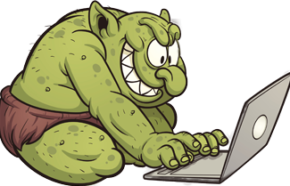

Informasjon
Når mobbing skjer på sosiale medier kaller vi det for nettmobbing. Nettmobbing er eit viktigt tema innan språk og kommunikasjon i sosiale medium. Det er dessverre mangen som opplever å bli mobba. I kommentarfelt på nettet vert det skreve både positive og nagative kommentarer. Mange skriv anonymt og skriv veldig stygt, ofte direkte til personen som har skrive sakene.Personar som skriv stygge kommentarar på nett, gjerne utan å oppgje navnet sitt kallar ein for «Nettroll» . Grunnen til at andre skriv stygge kommentarar til andre kan vere at dei er sjalu, eller vil øydelegga for andre. Mange meinar at det er lettare å skrive til andre på nettet, ein gøymer seg bak ein skjerm, ein ser ikkje direkte personen ein skriv til eller ein skriv utan at den andre veit kven ein er.
